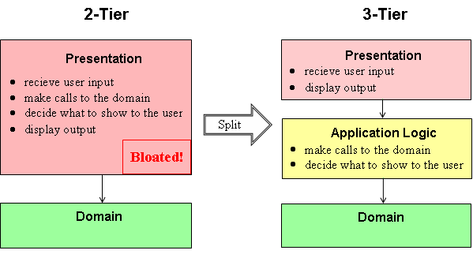
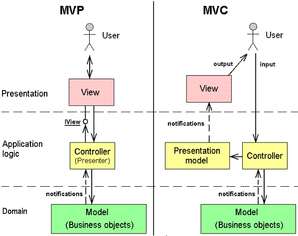
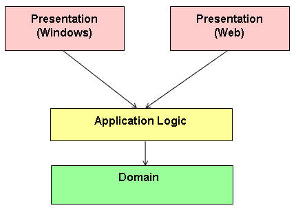
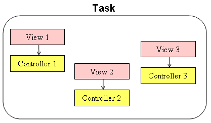

MVC# Overview
Abstract: This article gives an overview of MVC# - a Model-View-Presenter framework
for .NET platform. It firstly explains the MVP pattern essentials and then walks
through the key features of the MVC# framework which help building true MVP-based
solutions.
What is Model-View-Presenter?
3-tier architecture
MVC and MVP patterns
Why using MVC#?
1. Views and controllers get connected automatically
2. Multiple GUI platforms supported
3. Platform-independent navigation to views
4. Tasks concept
Conclusion
What is Model-View-Presenter?
3-tier architecture
One of the most fundamental approaches in software engineering is the Layered architecture.
It implies dividing a system into several interacting layers with certain limitations
imposed on how layers may interact.s Layered architecture finds its application in
various systems for example net protocols (TCP/IP layers), operating systems (three
layers: core, drivers, applications) and others.
A particular case of layered architecture is the 3-tier architecture with its variations:
Model-View-Controller and Model-View-Presenter. Before considering MVP (and MVC)
let us discuss the general 3-tier architecture and its difference to the conventional
programming style.
A straightforward (and widely used) approach in designing applications is the 2-tier
architecture. According to it an application consists of a presentation layer and
a domain layer. Domain layer classes represent the problem domain entities
(e.g. customer, order) and are usually bound to some database access facilities.
Presentation classes in 2-tier architecture have the following responsibilities:
- receive user input
- make necessary calls to the domain tier
- decide what to show next to the user
- display output
These responsibilities are rather vast and, as a system grows, may result in a bloated
presentation layer. Moreover they logically can be divided into two groups: actually
presentation logic (code for perceiving input and displaying output) and application
logic (communication with the domain tier and application flow decisions). These
responsibilities require different programming skills and should better be not mixed
in a single module/class. A quite natural solution is to split this too broad presentation
layer into two: presentation and application logic:

3-tier architecture is rather abstract. While it declares an existence of three
layers, it says nothing about classes in these layers and their interaction. A much
more precise form have two 3-tier architecture variations: Model-View-Controller
and Model-View-Presenter. Let us proceed to their discussion.
MVC and MVP patterns
According to both MVC and MVP the presentation layer consists of view objects, and
application logic consists of controller objects (we will use "controller" name
instead of "presenter" in MVP). For each view object a corresponding controller
exists and vice versa. And although MVC and MVP are based on a common 3-tier principle:
views process only presentation needs and controllers handle application logic, these
patterns have two major differences:
- In MVC controllers receive and process user input, but in MVP views receive user
input and then merely delegate processing to the corresponding controllers. That
is why MVP pattern better fits modern UI environments (Windows/Web forms) where
view classes themselves handle user gestures.
- In MVC controllers affect their views by changing the intermediate presentation
model, which the views are subscribed to (by observer pattern). This makes views
pure observers without direct access to them. MVP on the other hand violates this
"pure observer" rule by providing a direct link from a controller to its view. This
makes MVP more handy as compared to MVC.

The said differences make the MVP pattern more attractive than MVC from the developer's
point of view. And indeed MVP was designed to be an evolution of MVC and to improve
the latter. That is why we often refer to MVP as "sharp MVC" and therefore the name
our MVP framework is MVC#.
Why using MVC#?
Now that we are convinced in the usefulness of the MVP pattern we may start using
it in our applications. However it may be not as easy. Maintaining an additional
application logic layer may require considerable efforts. For example a developer
needs to take care of linking between all views and appropriate controllers,
Fortunately MVC# automates and takes on itself much of the work concerned with MVP
usage. Thus it simplifies and speeds up the development of MVP applications. Below
is the list of MVC# framework features:
1. Views and controllers get connected automatically
Developers do not have to care about associating views with their controllers. MVC#
framework automatically establishes links between views and corresponding controllers:
public class OrderDetailsView
...
private void processOrderButton_Click(object sender, EventArgs e)
{
// No code needed to establish a link to the controller
(Controller as OrderDetailsController).ProcessOrder();
}
2. Multiple GUI platforms supported
MVC# allows targeting different GUI platforms (Windows, Web, Silverlight, etc.) Thus the same
application can be used with quite different presentation layers - one for Windows,
the other for Silverlight or Web environment, etc.:

3. Platform-independent navigation to views
To make application logic fully independent of the presentation layer, MVC# provides
a platform-independent way of navigating to views. Instead of activating a
Windows form or redirecting to a Web page a developer should simply call a uniform
Navigator.Navigate(...) method:
public class OrderDetailsController
...
public void ProcessOrder()
{
// No Response.Redirect(...) or Form.Show() calls
Task.Navigator.Navigate(OrderSupportTask.ProcessOrder);
}
4. Tasks concept
Another useful feature of MVC# framework, although not directly related to the MVP
pattern, is the Task concept. A task unites several views with their controllers
in fulfilling some job. For example a ticket booking task may consist of two views:
one to choose a ticket, the other - to do the payment. In MVC# all controllers within
a task are given a link to the task object. Generally a task can be expressed as
a workflow or a state machine.

Conclusion
MVC# framework frees developers from much of extra work required in construction
of Model-View-Presenter applications. It allows creating flexible MVP-based application
with almost no extra cost. For more information on MVC# including the
examples of using it see the project web site.